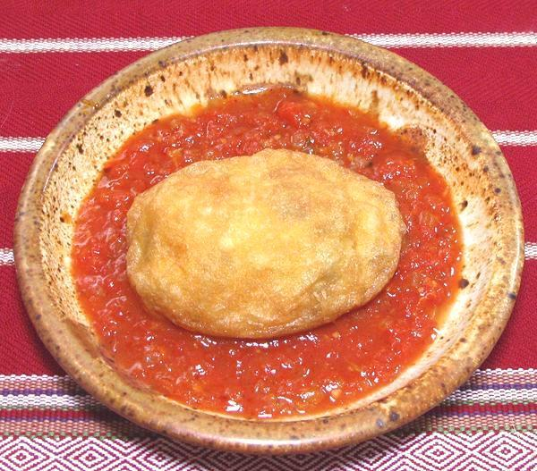
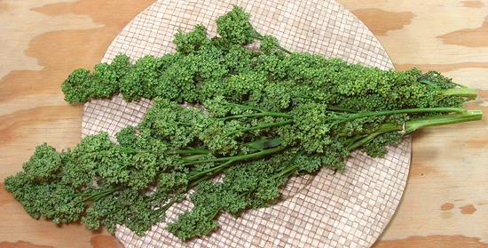
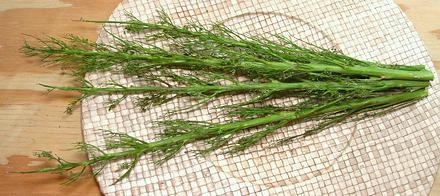
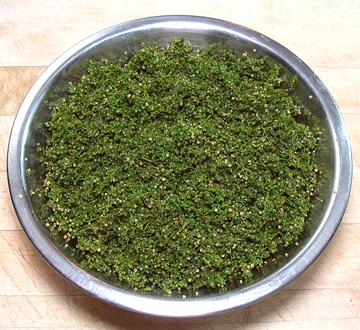
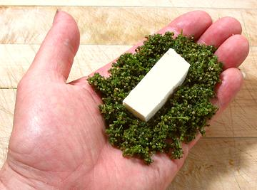
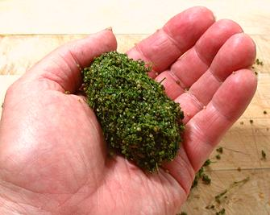
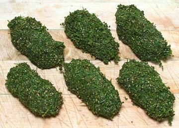
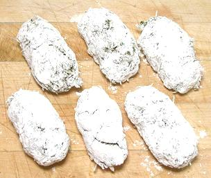
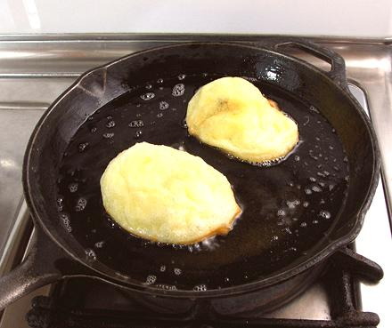

Huauzontle Patty, Finished and Served.

Huauzontle immature seedheads as purchased.

Stems after stripping seed buds.

Seed Buds after cooking.


Forming the patty with Cheese in the center.


Finished patties before and after flouring.

Patties frying. These still need more browning on the top.